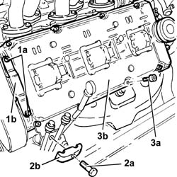

1016A30 left cam cover - r + r and replace gasket
- Path
- Procedures > 10 ENGINE > 1016 CYLINDER HEAD/S > 1016A cam covers > 1016A30 left cam cover - r + r and replace gasket
- Kind
- repair procedure (removal / refitting; the operation number is the code)
- Applies to
- engines: 2.5 V6, 3.2 V6; all production periods
- Interactive page
- https://sloeber94.github.io/elrnDB-a156/en/#/3237458
Applies to: engines: 2.5 V6, 3.2 V6; all production periods
 Removing
Removing
 Refitting
Refitting1016A42 left hand cylinder head ignition coil cover - r+r
5510C16 left hand cylinder head ignition coil - r+r
Disconnect the earth lead from the left tappet cover.
1032D12 timing system protective cover(s) - r + r
1. Undo the bolts (1a) and remove the bracket (1b) securing the timing cover.
2. Undo the bolt (2a) and remove the bracket (2b) fixing the air conditioning pipes.
Move th engine oil dipstick aside.
3. Undo the bolts (3a) and remove the left side tappet cover (3b) complete with gasket.

Applies to: engines: 2.5 V6, 3.2 V6; all production periods
Refitting
RemovingFit the left tappet cover, complete with a new gasket, and fix it tightening the bolts to the recommended torque.
 | Fastening | Component | Ø | Value (daNm) |
|---|---|---|---|---|
- | Bolt | CAM COVERS | M7 | 1.2 |
Place the engine oil dipstick back in its seating.
Fit the air conditioning pipes bracket and fix it using the bolt.
Fit the bracket securing the timing gear protective cover and fix it using the bolts.
1032D12 timing system protective cover(s) - r + r
Connect the earth lead to the left tappet cover.
Topics linked from this page (3)
- 1016A42 left hand cylinder head ignition coil cover - r+r
- 1032D12 timing system protective cover(s) - r + r
- 5510C16 left hand cylinder head ignition coil - r+r
Topics that link to this page (7)
- 1016A36 left hand and right hand cam cover - r+r
- 1016D21 lh cylinder head - r r and replace gasket for versions with air conditioner
- 1016D25 rh cylinder head - r r and replace gasket for versions with air conditioner
- 1036E11 camshafts in left hand cylinder head - r r on vehicle for versions with air conditioner
- 1036E15 camshafts in rh cylinder head - r r on vehicle for versions with air conditioner
- 1036E54 front oil seals of l/h overhead camshaft - replace
- 1036E58 front oil seal of r/h overhead camshafts - replace